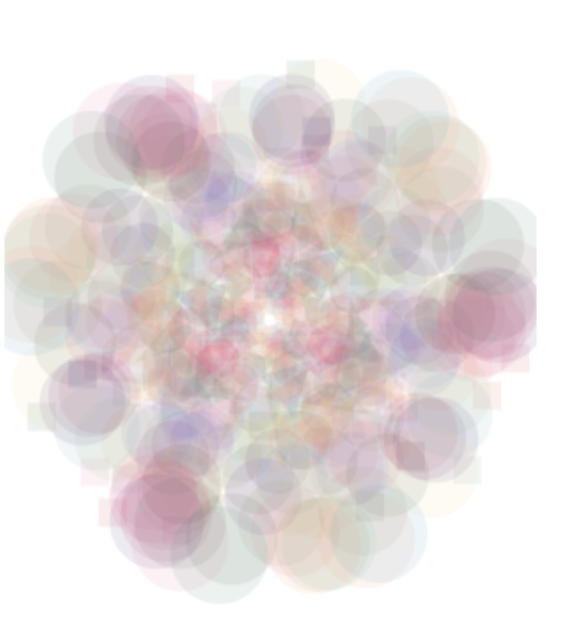
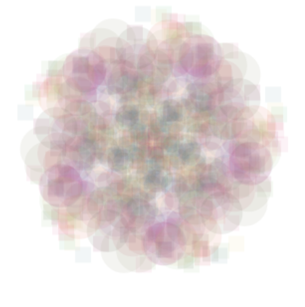

UCSB, spring semester 2015
Individual work
Final project in the course "Digital Projects: Mobile Media - App Art, duration 2 weeks
Kaleidoscope is an app exploring the motion sensor on the phone to make a pattern on the screen. The app was made using html and java script. Pictures underneath are print screens of the app in use.
 